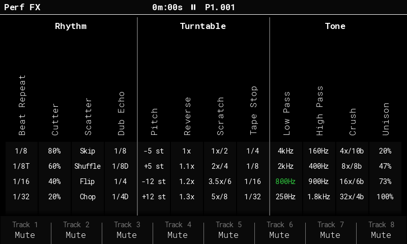
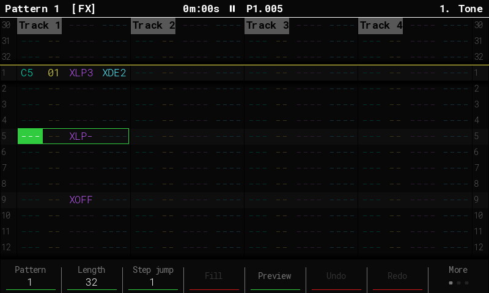
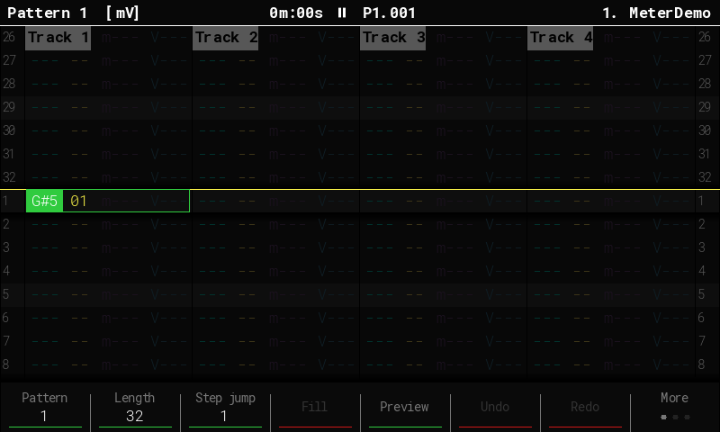
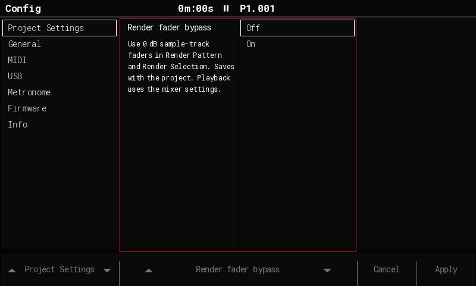
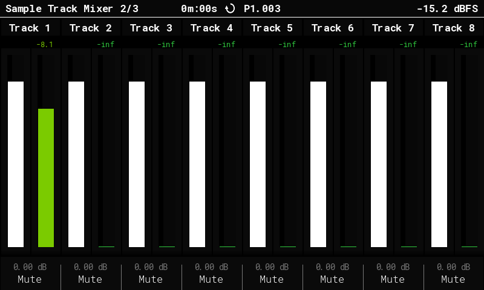
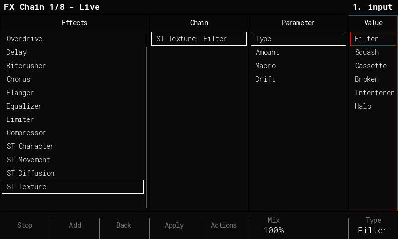
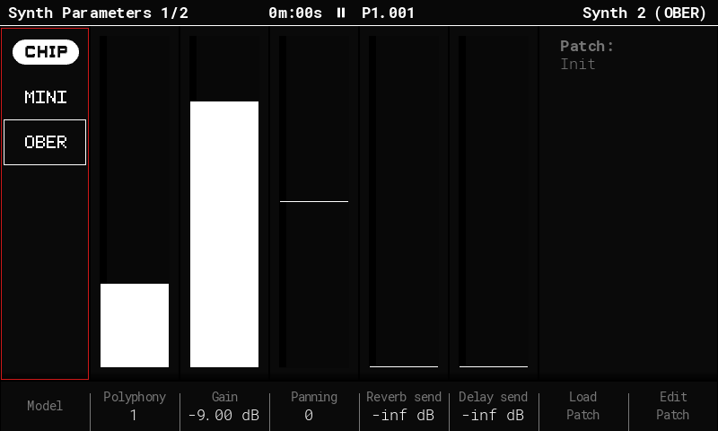

Feature guides
Performance FX
- Press Perform. Each column is an effect and each row is a preset. Hold a pad to hear it and release the pad to fade out.
- Hold pads in up to three different columns to stack effects. Within a column, the latest held pad wins. Press Delete to release all live pads.
- Use the eight buttons under the screen to mute or unmute tracks. Press Perform again to switch between the audio and MIDI track banks.
In 0.0.3, Cassette replaces Pitch with Warm, Wow, Worn, and Chewed. Scratch plays four beat-synced phrases, and Crush offers 2×, 4×, 8×, and 16× sample-rate reduction.
On Master → Global Mixer 3/3, hold F5 and turn the jog wheel or use the arrows to adjust Perf FX Mix. Press Delete while holding F5 to reset it to 100%. Unmute and raise Line In on that page to process the monitored input through the rack.

Performance FX sequencing
In Pattern, choose X — Perf FX in FX1 or FX2. Pick a preset with the Performance pad layout in value edit, or use the jog wheel or arrows to select a preset or release command. You can place a command on a step without a note.
Use XCA1–XCA4 for Cassette and XCA- to release it. Saved XPT values now select Cassette. Saved XSK and XCR values select the new settings for the same pad numbers.
| Step | FX1 | FX2 | Result |
|---|---|---|---|
| 01 | XLP3 | XDE2 | Start Low Pass at 800 Hz and Dub Echo at a dotted eighth note. |
| 02 | ---- | ---- | Both effects stay active. |
| 05 | XLP- | ---- | Release Low Pass. Dub Echo keeps playing. |
| 09 | XOFF | ---- | Release all sequenced effects. |
Live pads and sequenced commands share a limit of three different effects at once. A fourth waits for a slot to free up. If both select the same effect, the latest preset wins and uses one slot.
Commands on muted tracks or steps that fail Chance are skipped. Latches carry across loops of the same pattern and release when you change patterns or stop. Master WAV exports include the effects. Individual stems are taken before the rack.

Pattern and mixer
Pattern view indicator
In the four-track Pattern view, press Note while the Note column is selected. The title shows [FX] for FX1 and FX2 or [mV] for Micro-move and Volume/Velocity. Tracker CE already has the toggle. SideTracker adds the indicator when Config → General → Pattern info is set to Additional info.
Render fader bypass
Turn on Config → Project Settings → Render fader bypass to use 0 dB sample-track fader gain in Render Pattern and Render Selection. It also applies to post-fader delay and reverb sends. The setting is off by default and saves with the project. Playback, song exports, and stem exports use the saved mixer levels.
Master and track meter readouts
Read the final digital output peak in dBFS at the top right of Master. The numbers above the sample-track meters on Mixer 2/3 show averaged signal levels. The dB values along the bottom show the fader gain settings.
Master 1/3 shows a 50 Hz to 20 kHz spectrum over Delay, Reverb, Saturation, and Limiter. Open Saturation with F4 to choose a Mode and set Drive.

[mV] pattern view

Master routing and exports
Signal path
- Combined mix Sample and synth tracks, monitored Line In, and the parallel Delay and Reverb returns.
- Perf FX The rack blends the processed and dry signals using Perf FX Mix.
- Master Saturation → Limiter The complete mix passes through one saturation stage, then the limiter.
- Final digital master Preview and metronome join here. The spectrum and USB master read the digital signal.
- Codec DSP → Headphones Space → Bass Boost → EQ, followed by the DAC and analog headphone Volume.
| Output | Capture point |
|---|---|
| Pattern and Selection | After Perf FX and before Master Saturation and Limiter. Includes Delay, Reverb, and sequenced Perf FX. |
Song and stem master.wav | Final digital master after the Limiter and before codec DSP. |
| Individual stems | Tracks and synths retain their instrument processing, gain, and pan. Delay and Reverb have separate return files. All of these taps are upstream of Perf FX. |
| USB on Tracker+ and Mini | Channels 1–2 carry the final digital master. Separate track, synth, and effect return pairs use upstream taps. |
| Record Output | After Space, Bass Boost, and EQ, before the DAC and headphone Volume. |
Render fader bypass sets sample-track faders to 0 dB for Pattern and Selection, including post-fader sends. Offline exports mute monitored Line In.
Record Output
Choose File → Export → Record Output (F7), then press Record (F8). The Tracker plays the song once from the first playlist entry, records the effect tail, and saves a stereo master.wav in Export/<project>/<project>_RecordOutput_NNNN/ on the SD card.
Line In and Mic are unavailable during the take. Press F8 (Cancel) to discard the partial recording. The Tracker restores the input path when the take ends or you cancel.
Compared with original Tracker CE
Original Tracker CE applies saturation in both the dry mixer and the combined mixer, and captures Pattern, Selection, and Song from the same post-limiter master. SideTracker applies saturation once. Short bounces print the sequenced effects before saturation and limiting, so they can go through those master stages when you use them in an arrangement.
Sample Editor
- Open Effects. Select an effect and press Add. Choose the stage in Chain, then edit its Parameter and Value. The chain can contain up to eight stages.
- Try ST Texture → Cassette for a starting point. The four ST categories offer six Types each. Hold Mix (F7) and turn the jog wheel or use the arrows to blend the whole chain.
- Use Preview to listen. Back (F6) keeps the draft active for waveform preview. Apply writes to the current sample slot. Use Actions → Render to new slot for a separate copy. If realtime preview exceeds the audio budget, you can still Apply.
Use Actions → Save Patch or Load Patch to reuse a chain. Effect patches live in /Effects/Patches/ on the SD card. For selection edits such as Crop or fades, open Tools from the waveform. After Apply, Undo on the waveform restores the previous audio.

Synth engines
Hold Instrument and choose a synth slot. Open I. Params → Model to select an engine. Use Load for a patch or Edit to shape it.
- MINI is a three-oscillator monosynth with a resonant ladder filter and low-note priority.
- OBER is a two-oscillator synth with PWM, hard sync, and SEM filter morphing. Its Voice section offers up to four voices or Mono Legato.
- CHIP is the Community Edition’s chiptune engine.
MINI and OBER each have three built-in patches. Put extra .patch files in /Patches/MINI/ or /Patches/OBER/ on the SD card to load them from the synth editor.
